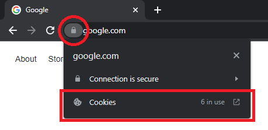
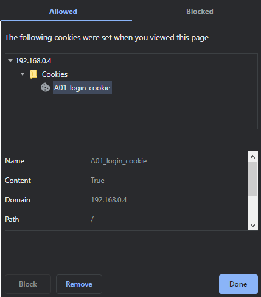

A01: Broken Access Control
Please read the following scenario
Click here to enter the Console
Your login details are as follow:
| Username | Password |
|---|---|
| peter.cameron738@example.com | 2108475 |
Access control enforces policy such that users cannot act outside of their intended permissions. Failures typically lead to unauthorized information disclosure, modification, or destruction of all data or performing a business function outside the user's limits.
vulnerability #1
This vulnerability is related to the HTML content. Look closely into the user console page and try editing the HTML content.
(F12 will be your good friend for this weakness)
vulnerability #2
This vulnerability is related to the login mechanism. Check the cookies and possible links for more clues.
(You may want to find the differences between the user and admin login pages)
vulnerability #1
This vulnerability is related to the HTML content in user.php.
After logging in into the user console page, you should notice the ADMIN FUNCTIONS (UNAVAILABLE FOR USERS) on the bottom of the right side panel.
As you are logging in as user instead of admin, it is normal to see nothing underneath this section.
However just because you can't see something doesn't mean it isn't there. The admin functions are only hidden with an unsecure method.
Exploitation
- Press F12 and click on the
Elementstab. - Press ctrl + f and type
ADMIN FUNCTIONSin the search box. - The next element below the highlighted element is a list element
<ul>, which has an idadmin_functions. - Double check the
<ul>element and remove thehiddenattribute. - Press enter and observe the changes on the user console page
- You can perform some admin-only functions, such as reset the admin password!
Explanation
This vulnerability is an example of elevation of privilege, acting as an admin when logged in as a user.
The console page is poorly designed such that sensitive functions are sent to clients even when the logged in user is not admin.
The usage of hidden attribute can only hide the content from viewing, but the content still exists in the page.
By removing the hidden attribute, anyone can interact with the admin-only functions without being admin users.
These admin-only functions should be isolated from regular users, prevent any possible interactions from unauthorized users.
vulnerability #2
This vulnerability is related to the login mechanism. Most of the modern web applications have implemented a way to keep the logged in session of different users. This can avoid users to logged in repeatedly when navigating different pages. But the console page has used an unsecure method to track the logged in session. The details are in the cookies and the admin login page.
Exploitation
- Visit the user login page and right click to view the page source.
- Do the same on admin login page and compare the differences between two login pages.
- You can spot the differences in the
formelementactionattribute, which user login page pointing touser.phpand that of admin pointing toadmin.php. - Sign in to the user console page.
- Look at the address bar, notice that the current site is at
user.php. - Check the cookies used in the console page. Click on the icon on the left of the address bar (red circle), then click on Cookies (red rectangle).
 - Explore the existing cookies. You can observe that there is a cookie called
A01_login_cookiewhich has the valueTrue.
 - Combine the previous knowledge, change the address bar to visit
admin.php. - You can read the personal information of all the users in the system!
Explanation
This vulnerability is an example of bypassing access control checks, by modifying the target links. In order to keep the user session, the console page uses a cookie to record the login status of a user. However the cookies do not record the role of the user, such that the login status is only represented by a boolean value. As a result, when a logged in users enter the link to the admin console page, the page cannot identify whether the logged in users is really an admin or not. Thus bypassing the admin login page, entering the admin console page without the admin credentials. The session cookies should have a more meaningful value to keep track of the identity of the users.
.accordion-body, though the transition does limit overflow.